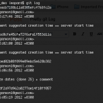

入门教程
Subversion Cheat Sheet
（
PDF version
）
The Subversion Book
Subversion Official Documentation
SVN 1-Click Setup
Subversion客户端
Tortoise SVN
(Windows only)
Cornerstone
(Mac only)
Workbench
SmartSVN
Versions
(Mac only)
Subclipse
Subcommander
FSVS
“Fast System Versioning”,
Syncro SVN Client
scplugin
(Mac only)
iPhone SVN Log Viewer
IDE插件
Subclipse
（
Eclipse IDE
for Java）
AnkhSVN
（Microsoft’s
Visual Studio
）
How to Ignore IDE Project Files in Subversion
SVN 浏览器
Trac
Warehouse
WebSVN
Insurrection
Polarion WebClient for SVN
SVN主机
Google Code
CVSDude
（$5.99 /月）
Beanstalk
（$15/月 ）
Unfuddle
（$9/月）
Assembla
（$2/月）
Subversion社区
SVNForum
openCollabNet
Subversion图书
Subversion in Action
Practical Subversion
Pragmatic Version Control Using Subversion
Subversion Version Control: Using the Subversion Version Control System in Development Projects
Subversion 相关文章
Subversion for Web Projects
Making the Jump to SVN
Keeping Your Life in Subversion
How to Set Up a Personal Home Subversion Server
How to Set Up Subversion and websvn on Debian
Mirroring a Subversion Repository
Configuring Subversion to Use a Proxy Server
Maintaining an SVN Mirror Directly from Git
Top 10 Subversion Tips for CVS Users
Mergeinfo – Understanding the Internals
文章：
来源
（转载本站文章请注明作者和出处
酷 壳 – CoolShell
，请勿用于任何商业用途）
相关文章
版本管理器的发展史

Git显示漂亮日志的小技巧
WTF Javascript
程序员需要具备的基本技能
Twitter的禁用口令
软件真的好难做啊
The post
版本控制Subversion相关资源
first appeared on
酷 壳 - CoolShell
.